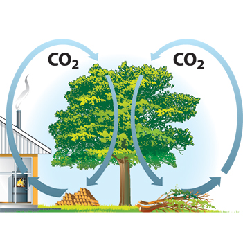
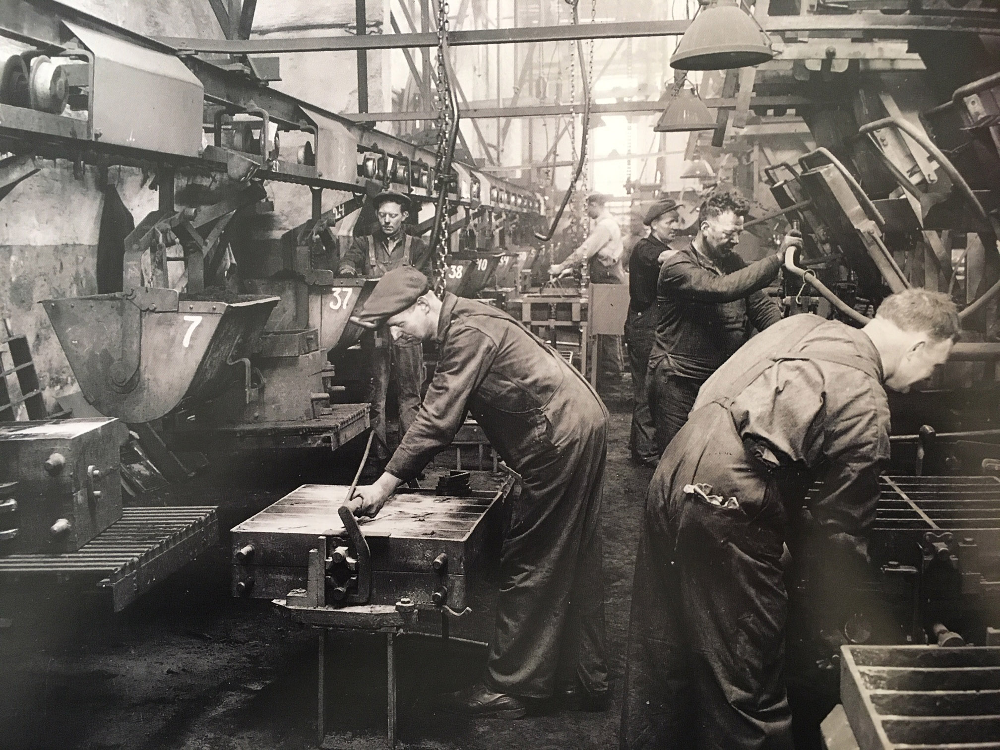

Air quality is important to us here at Morsø and we endeavour to provide our customers with the highest quality wood burners to ensure this. Our constant research and innovation has led to our developing stoves that are amongst the most efficient wood burning stoves in the world, making them a responsible heat source. Morsø’s wood-burning stoves meet some of the strictest environmental standards, including the Nordic Swan Eco Label. You can also be assured that Morsø are at the forefront of the EcoDesign 2022 standards that have been discussed in the UK press recently. A large of number of our stoves are also listed on the HETAS website as SIA EcoDesign ready with others to follow. We have demonstrably reduced the emissions of particles to an absolute minimum by using refined combustion technology together with an advanced purification system.
{kind=link}
We also produce a large number of stoves that can currently be fitted in UK smoke-free zones. These produce a clean burn with very low emissions. It is important however that, once you have fitted a quality wood burning stove you use the correct wood to ensure an effective and environmentally friendly burn. Ideally the wood you use should be kiln dried and with a moisture content of a maximum 20% but lower than this is better.
The combination of a suitable Morsø stove together with dry fuel will mean that you can enjoy your stove with a clear conscience and even clearer emissions. With further research and product innovations, Morsø will continue to bring warmth and comfort to homes in a way that is, at all times, environmentally responsible.
Morsø gives you local warming. Not global warming.
A simple illustration showing the carbon cycle in terms of a house, a tree and CO2 circulation to show that Morsøs are the most efficient wood burning stoves around.Wood burning stoves raise the question of global warming: they emit carbon dioxide (CO2), so are they damaging to the environment? In fact, the most efficient wood burning stoves are just about carbon neutral. They are certainly more efficient than burning gas or coal.
As trees grow, they absorb and lock in CO2 as part of photosynthesis. When the trees are felled and burnt, they release it back into the atmosphere. When wood is burnt, more CO2 is released than if it simply rotted down (because of the work of bacteria and other micro-organisms). However, if wood is burnt efficiently, much less CO2 is emitted.
Unlike oil, coal or gas, wood can be replaced much more quickly by planting new trees. This helps to maintain the neutral carbon cycle, generation after generation.
Air quality is important to us here at Morsø and we endeavour to provide our customers with the highest quality wood burners to ensure this. Our constant research and innovation has led to our developing stoves that are amongst the most efficient wood burning stoves in the world, making them a responsible heat source. Morsø’s wood-burning stoves meet some of the strictest environmental standards, including the Nordic Swan Eco Label. You can also be assured that Morsø are at the forefront of the EcoDesign 2022 standards that have been discussed in the UK press recently. A large of number of our stoves are also listed on the HETAS website as SIA EcoDesign ready with others to follow. We have demonstrably reduced the emissions of particles to an absolute minimum by using refined combustion technology together with an advanced purification system. We also produce a large number of stoves that can currently be fitted in UK smoke-free zones. These produce a clean burn with very low emissions. It is important however that, once you have fitted a quality wood burning stove you use the correct wood to ensure an effective and environmentally friendly burn. Ideally the wood you use should be kiln dried and with a moisture content of a maximum 20% but lower than this is better. The combination of a suitable Morsø stove together with dry fuel will mean that you can enjoy your stove with a clear conscience and even clearer emissions. With further research and product innovations, Morsø will continue to bring warmth and comfort to homes in a way that is, at all times, environmentally responsible. Morsø gives you local warming. Not global warming.
A simple illustration showing the carbon cycle in terms of a house, a tree and CO2 circulation to show that Morsøs are the most efficient wood burning stoves around.Wood burning stoves raise the question of global warming: they emit carbon dioxide (CO2), so are they damaging to the environment? In fact, the most efficient wood burning stoves are just about carbon neutral. They are certainly more efficient than burning gas or coal. As trees grow, they absorb and lock in CO2 as part of photosynthesis. When the trees are felled and burnt, they release it back into the atmosphere. When wood is burnt, more CO2 is released than if it simply rotted down (because of the work of bacteria and other micro-organisms). However, if wood is burnt efficiently, much less CO2 is emitted. Unlike oil, coal or gas, wood can be replaced much more quickly by planting new trees. This helps to maintain the neutral carbon cycle, generation after generation. Wood must burn as efficiently as possible to make wood burners truly carbon neutral. This is where Morsø really comes into its own: our constant research and innovation has led to our developing the most efficient wood burning stoves in the world.
Wood must burn as efficiently as possible to make wood burners truly carbon neutral. This is where Morsø really comes into its own: our constant research and innovation has led to our developing the most efficient wood burning stoves in the world.
On the one side, there’s talk about CO2 and global warming. On the other, there’s the recurring debate about soot, which, along with harmless water vapour, is contained in the smoke emitted from any wood-burning stove.
Being environmentally friendly isn’t just about reducing carbon dioxide emissions. There is an ongoing debate about soot which, together with water vapour, makes up the smoke emitted from any wood burning stove.
When we develop our wood burners, we always do so from an eco-friendly point of view.
Modern Morsø stoves, if used correctly, are among the most efficient wood burning stoves in the world. And we can prove it. We have demonstrably reduced the emission of particles to an absolute minimum using refined combustion technology and advanced purification systems.
We make a wide range of DEFRA-approved wood burning stoves for use in smoke-free zones. They adhere to the strict requirements of the Clean Air Act 1993.